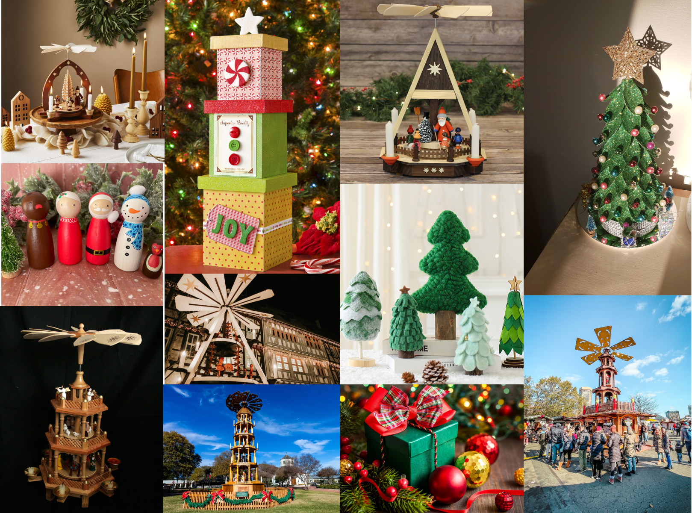
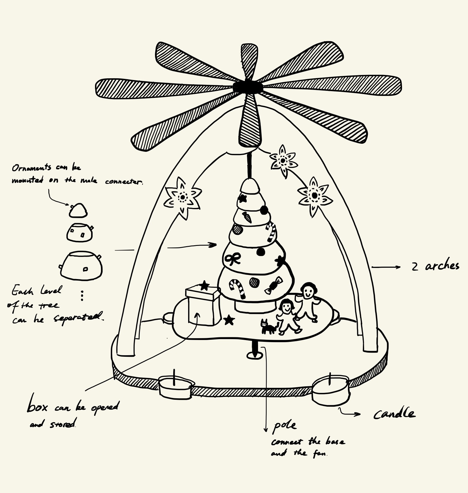

A7: Final Project Proposal!
Christmas pyramid spinner
For my final project, I wanted to make something enjoyable related to Christmas,
which is about to come! After brainstorming, I decided to build a Christmas pyramid spinner. Christmas pyramids
are Christmas decorations that have their roots in the folklore and customs of the Ore Mountain region of Germany.
They normally comprise a decorated pyramidal outer frame with candle holders and a central carousel with a rotor
at the top which is driven by warm air from the lit candles.
My idea will go beyond the original design while keeping the traditional framework.
In addition to creating an outer frame with candle holders (with candle), and a central carousel with a rotor,
my Christmas pyramid spinner will provide a customizable Christmas tree and festive friends figurine with a cute
Christmas gift box that can be opened and stored. Users will have multifold fun on this Christmas pyramid spinner.

Breakdown of tasks
CAD modeling: Design the out frame, fan blades, base, hub, Christmas tree, figurines,
gift box and candles with Rhino and Grasshopper.
3D printing: Christmas tree, figurines, gift box and hub
Laser cut: out frame, fan blades, base
Mold and case: candles
3D printing: Christmas tree, figurines, gift box and hub
Laser cut: out frame, fan blades, base
Mold and case: candles
| Timeline | |||||||||||||||||||||||||||||||||||||||||||||||||||||||||||||||||||||||||||||||||||
|---|---|---|---|---|---|---|---|---|---|---|---|---|---|---|---|---|---|---|---|---|---|---|---|---|---|---|---|---|---|---|---|---|---|---|---|---|---|---|---|---|---|---|---|---|---|---|---|---|---|---|---|---|---|---|---|---|---|---|---|---|---|---|---|---|---|---|---|---|---|---|---|---|---|---|---|---|---|---|---|---|---|---|---|
| Final decision on the styles and components of the pyramid spinner | by Nov 24 | ||||||||||||||||||||||||||||||||||||||||||||||||||||||||||||||||||||||||||||||||||
| CAD modeling all the parts on Rhino | by Nov 28 | ||||||||||||||||||||||||||||||||||||||||||||||||||||||||||||||||||||||||||||||||||
| Create the master parts for the mold of candles | by Nov 28 | ||||||||||||||||||||||||||||||||||||||||||||||||||||||||||||||||||||||||||||||||||
| Laser cutting the frame pieces on Mill | by Nov 30 | ||||||||||||||||||||||||||||||||||||||||||||||||||||||||||||||||||||||||||||||||||
| Making candles with candle molds | by Dec 1 | ||||||||||||||||||||||||||||||||||||||||||||||||||||||||||||||||||||||||||||||||||
| 3D printing and coloring all parts | by Dec 4 | ||||||||||||||||||||||||||||||||||||||||||||||||||||||||||||||||||||||||||||||||||
| Assembling and testing pyramid spinner | by Dec 5 | ||||||||||||||||||||||||||||||||||||||||||||||||||||||||||||||||||||||||||||||||||
Materials
Acrylic paint pens for painting 28 colors - for 3D printing coloring
Wax, wick, oil, (dye) - for snowman candles
Wood cardboard - for fan blades, base and outer frame
Pole, hub - for making the fan rotate
Wax, wick, oil, (dye) - for snowman candles
Wood cardboard - for fan blades, base and outer frame
Pole, hub - for making the fan rotate

Acrylic paint pens and wax and wick already delivered. The acrylic pens work great on
the surface of PLA. I didn't notice the amount of wax when I purchased it online. I think I can make candles wholesale.
Return to home